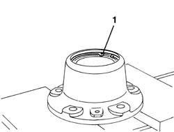
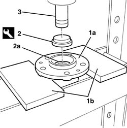
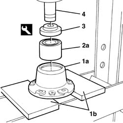

4450D36 REAR HUB BEARING - R.R.
- Path
- Procedures > 44 SUSPENSION AND WHEELS > 4450 WHEELS AND HUBS > 4450D REAR WHEEL HUBS > 4450D36 REAR HUB BEARING - R.R.
- Kind
- repair procedure (removal / refitting; the operation number is the code)
- Applies to
- all engines; all production periods
- Interactive page
- https://sloeber94.github.io/elrnDB-fDct/en/#/244001219
Applies to: all engines; all production periods
 Removing
Removing
 Refitting
RefittingOp. 3310B30 REAR BRAKE DISCS R R
Op. 3310B50 REAR BRAKE DISCS R R
Op. 4450D10 HUB OF ONE REAR WHEEL, L/H OR R/H - R+R WITH WHEEL REMOVED

Applies to: all engines; all production periods

Applies to: all engines; all production periods
Refitting
Removing
Applies to: all engines; all production periods
Applies to: all engines; all production periods
Op. 4450D10 HUB OF ONE REAR WHEEL, L/H OR R/H - R+R WITH WHEEL REMOVED